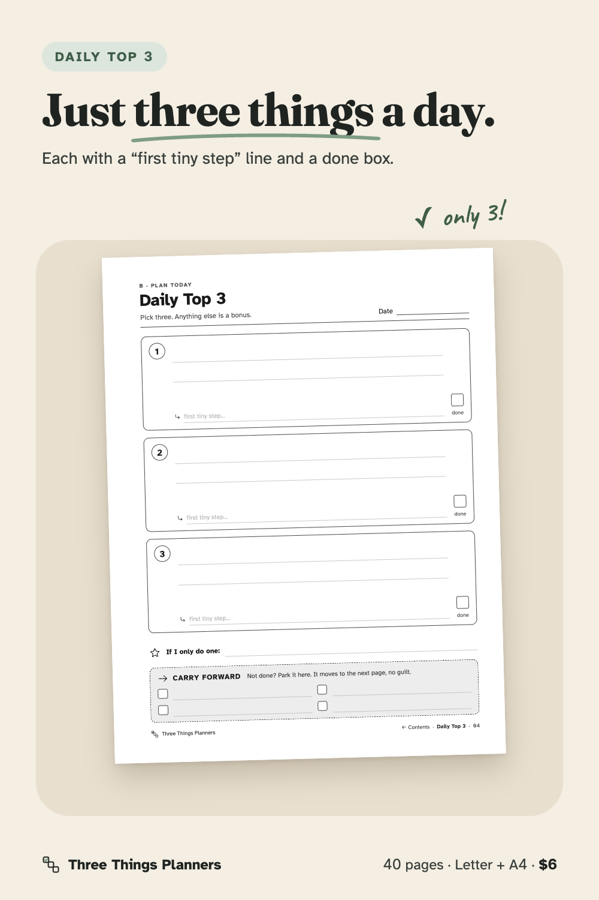
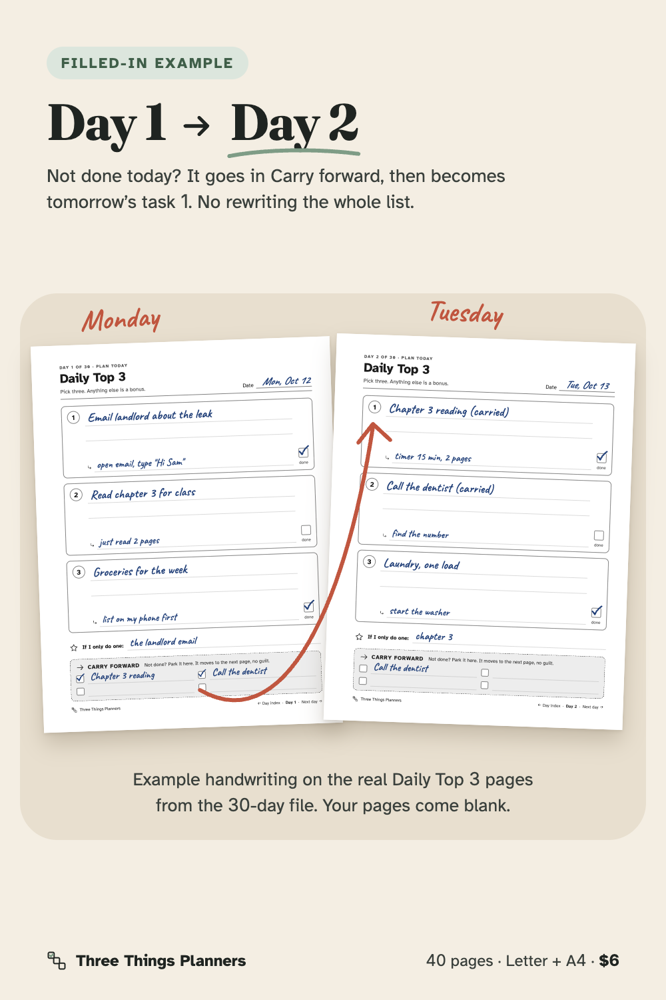
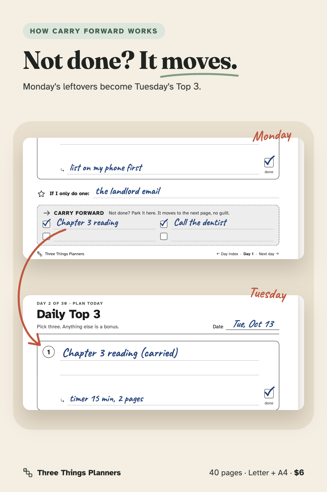
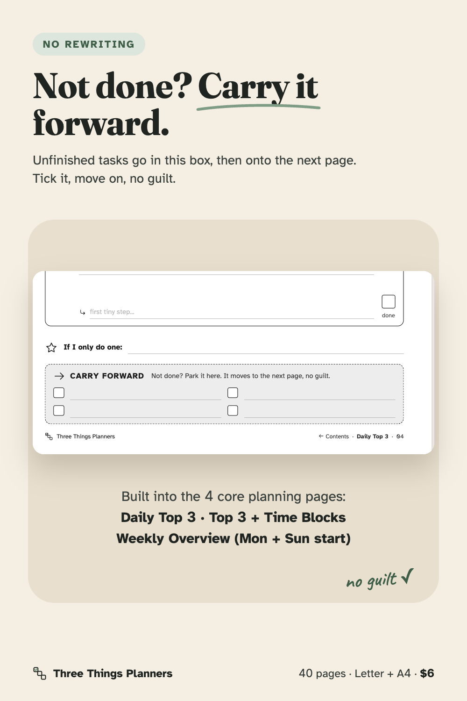
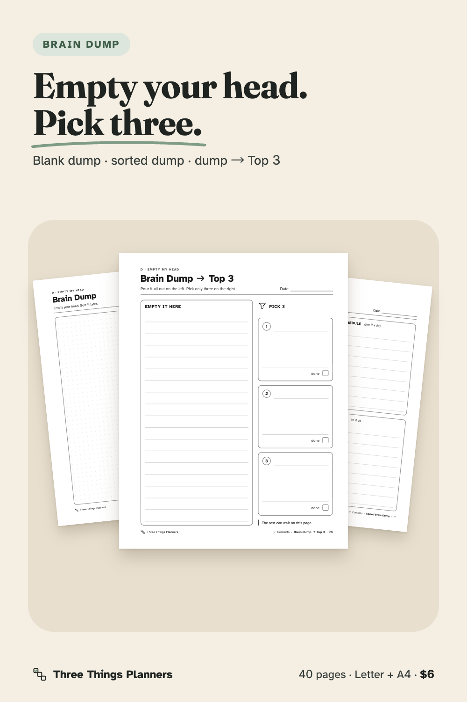
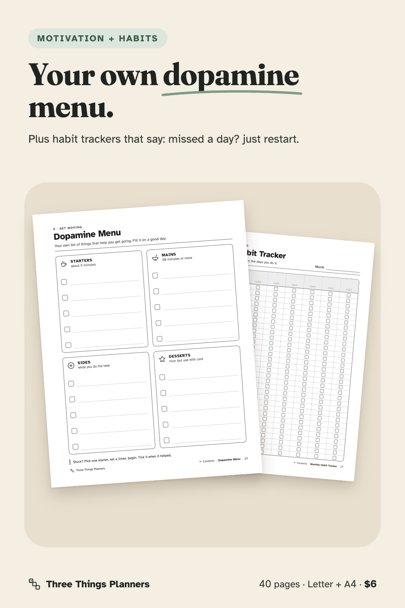
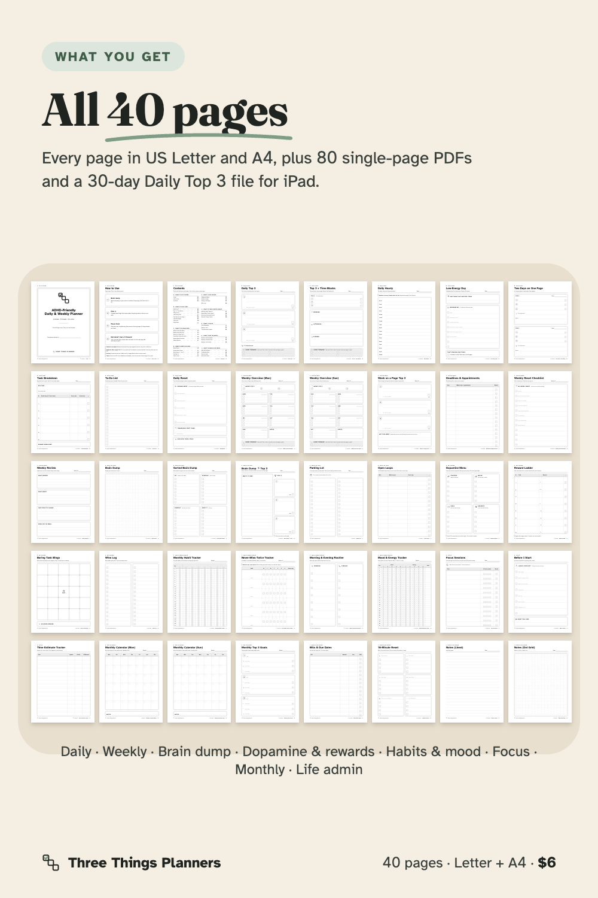
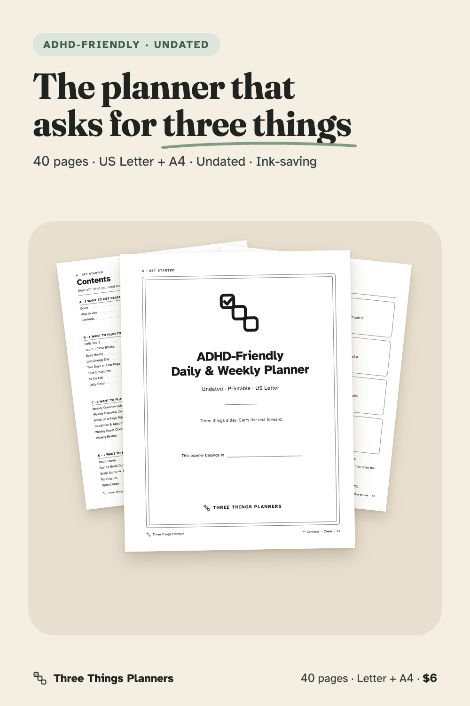

40 undated, ink-saving pages built around one idea: plan just three things a day, and carry the rest forward without rewriting.
From Three Things Planners, the planner imprint of Hustle Studio.

$6.00 USD, one-time payment, instant download. No subscription.
Buy now: $6Secure checkout. Payment is handled by Waffo Pancake, our merchant of record. We never see your card details.
14-day money-back guarantee. If the planner doesn't work for you, for any reason, email chenphien@gmail.com within 14 days of purchase and we'll refund you in full. No questions, no conditions (see Terms).
Try before you buy: download the free 5-page sample (ZIP). Daily Top 3, Top 3 + Time Blocks, Brain Dump, Dopamine Menu and Never-Miss-Twice Tracker in Letter + A4, plus 3 phone wallpapers. No email needed.
Every image below is rendered from the real page files in the pack. The two filled-in images use example handwriting to show how Carry forward works; the pages you get are blank. No buyer photos or reviews yet: the shop is new, and we won't invent any. The free sample above lets you print real pages before you pay.








The real pages in a tablet-size browser viewer: Contents link to Daily Top 3, handwriting and Carry forward, footer link back, Parking Lot link, 40-page overview. It is not recorded inside GoodNotes itself.
Most planners ask for too much. Hourly grids sit empty once one task runs long. Yesterday's leftovers have to be copied out again. By week three the planner stays closed.
This pack is built the other way around. Every page is undated, so skipped days leave no blank pages behind. The Daily Top 3 asks for three things only, each with a first tiny step so it's easier to start. Anything left over goes into the Carry forward box at the bottom of the page and moves to the next page. You don't have to rewrite it.
Around that core you get the tools ADHD-friendly planning usually needs, one simple job per page: a blank dotted brain dump, a four-box sorted brain dump (Do / Schedule / Someday / Drop it) and a "Brain Dump → Top 3" page that narrows your list to three. There's a Low-Energy Day page for heavy days, a Task Breakdown page with guessed vs actual minutes, a Ta-Da list for what you did finish, and a Dopamine Menu (Starters, Mains, Sides, Desserts) you fill with your own ideas. There's also a Reward Ladder, Boring Task Bingo, a Wins Log, a monthly habit tracker (8 habits × 31 days), a Never-Miss-Twice weekly tracker ("Missed a day? Just restart."), a Mood & Energy tracker, Focus Sessions, a "Before I Start" launch checklist, a Time Estimate Tracker, monthly calendars (Monday or Sunday start), Bills & Due Dates, a 10-Minute Reset, and lined and dot-grid notes.
Made for printing. The pages use black lines and one light gray only, with no dark fills, so they print clearly in black & white and save ink. The left margin is wider for hole punching. Both paper sizes are laid out separately, so A4 users get taller writing areas instead of white bands. Writing lines are 9 mm apart and checkboxes are 5.5 mm, so there's room for real handwriting or an Apple Pencil.
Made for tablets too. Import the full PDF into GoodNotes or Notability, or just the single page you use most. On page 3, tap any line to jump to that page. Every page footer links back to the Contents page. For everyday use there's also a 30-day Daily Top 3 file (31 pages): a Day index you can tap, then Day 1 to Day 30, each with "Day index" and "Next day" links in the footer. Write today's three things, tick what's done, and start tomorrow's page with whatever is in Carry forward.
Nothing is pre-filled. Habits, rewards and menu items are yours to write. Light gray hints show only where a nudge helps.
One ZIP download, ADHD-Printable-Planner-Pack_ThreeThingsPlanners.zip. Every file is also listed for direct download on your download page after payment. What's inside:
README.pdf print settings, GoodNotes / Notability import, license
US-Letter/
ADHD-Planner-Pack_Letter.pdf full 40-page planner, 8.5 × 11 in
ADHD-Daily-Top-3_30-Days_Letter.pdf 31 pages: Day index + Day 1–30
singles/ 01-cover.pdf … 40-notes-dot-grid.pdf (40 files)
A4/
ADHD-Planner-Pack_A4.pdf full 40-page planner, 210 × 297 mm
ADHD-Daily-Top-3_30-Days_A4.pdf 31 pages: Day index + Day 1–30
singles/ 01-cover.pdf … 40-notes-dot-grid.pdf (40 files)
Total: 85 PDF files, 40 unique page designs, 9 sections (Start, Daily, Weekly, Brain Dump, Dopamine & Rewards, Habits & Mood, Focus, Monthly, Life Admin & Notes).
Start: 1 Cover · 2 How to Use · 3 Contents (tap-to-jump links)
Daily: 4 Daily Top 3 · 5 Top 3 + Time Blocks · 6 Daily Hourly (optional) · 7 Low-Energy Day · 8 Two Days on One Page · 9 Task Breakdown · 10 Ta-Da List · 11 Daily Reset
Weekly: 12 Weekly Overview (Mon) · 13 Weekly Overview (Sun) · 14 Week on a Page Top 3 · 15 Deadlines & Appointments · 16 Weekly Reset Checklist · 17 Weekly Review
Brain dump: 18 Brain Dump · 19 Sorted Brain Dump · 20 Brain Dump → Top 3 · 21 Parking Lot · 22 Open Loops
Dopamine & rewards: 23 Dopamine Menu · 24 Reward Ladder · 25 Boring Task Bingo · 26 Wins Log
Habits & mood: 27 Monthly Habit Tracker · 28 Never-Miss-Twice Tracker · 29 Morning & Evening Routine · 30 Mood & Energy Tracker
Focus: 31 Focus Sessions · 32 Before I Start · 33 Time Estimate Tracker
Monthly: 34 Monthly Calendar (Mon) · 35 Monthly Calendar (Sun) · 36 Monthly Top 3 Goals
Life admin & notes: 37 Bills & Due Dates · 38 10-Minute Reset · 39 Notes (Lined) · 40 Notes (Dot Grid)
Is this a physical product?
No. It's an instant digital download (PDF). You print it at home or at a print shop, or use it in a note-taking app.
Which paper size should I use?
US Letter if you're in the US or Canada, A4 almost everywhere else. Both are included. Print at "Actual size / 100%", not "Fit to page".
Does it work in GoodNotes and Notability?
Yes. Import the PDF like any other document. Links on the Contents page jump to the right page, and the 30-day file's Day index jumps to each day. In GoodNotes, tap links in read-only mode. (The demo video shows the real pages and links in a tablet-size browser viewer, not inside GoodNotes itself.)
Will it use a lot of ink?
No. Pages use thin black lines, one light gray and no dark backgrounds. The covers are line art too.
Can I print pages more than once?
Yes, as often as you like for personal use. That's why every page also comes as its own single-page PDF. Please don't resell or share the files.
Will my download link keep working?
After payment you land on a download page with every file. Download the ZIP and keep it on your own device or cloud drive. Once it's saved, you don't need us to open or print the files. If you ever lose them, email chenphien@gmail.com with your order email and we'll send the files again.
Who is Three Things Planners? Will you fix problems?
Three Things Planners is the planner imprint of Hustle Studio, a small new shop. There are no reviews yet, and we won't invent any. That's why there's a free sample and a 14-day full refund. If you spot a problem in a page, email us. We reply within 2 business days, and fixes go out as a new download.
What if it doesn't work for me?
Email chenphien@gmail.com within 14 days of purchase and we'll refund you in full, no questions asked. Refunds go through Waffo Pancake to your original payment method.
This planner is an organizing tool. It is ADHD-friendly by design, and it is not medical advice.
$6.00 USD, one-time payment, instant download
Buy now: $6Secure checkout by Waffo Pancake (merchant of record). 14-day money-back guarantee. Free 5-page sample.